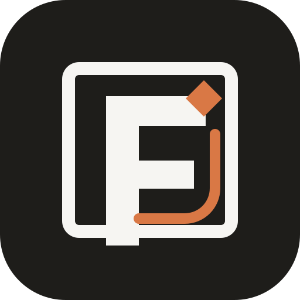
01 Orange Rail
Closest to the original 03 structure, warmer but not brown.
Build
Color and construction experiments based on the dark-frame route. This set tests matte orange, light green, and stronger geometry using the same premium black/off-white/deep-blue system.

Closest to the original 03 structure, warmer but not brown.
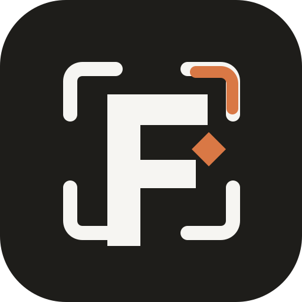
More premium and architectural; the accent becomes a corner system.
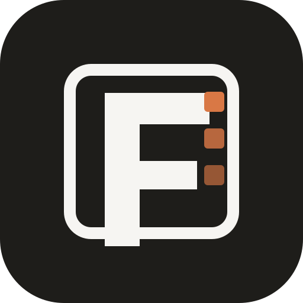
Operational proof blocks. Less elegant, more dashboard-native.
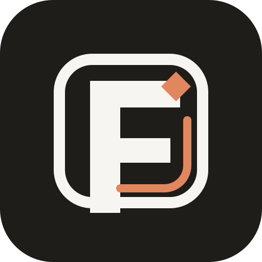
Softer orange, less aggressive. Best orange candidate.
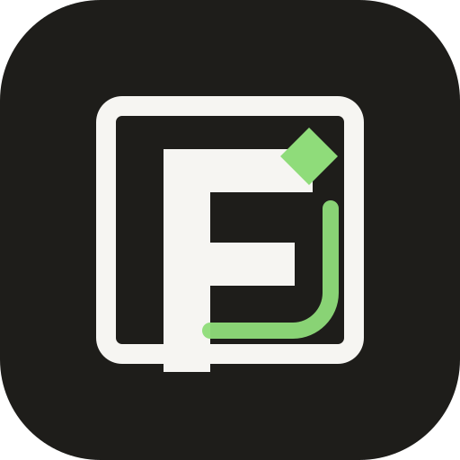
Fresh and readable; less enterprise than teal.
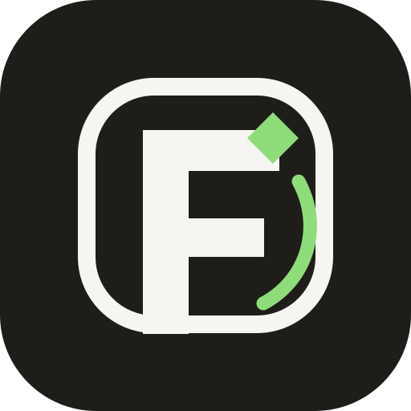
Better motion. More product-lab than software studio.
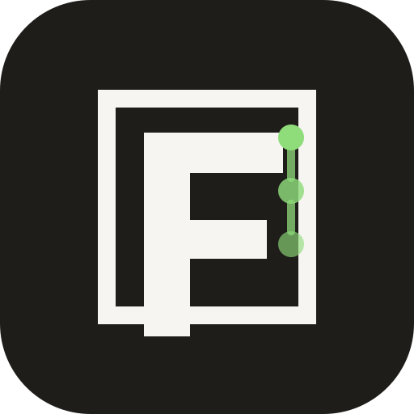
Signals evidence and test states, but less iconic.
Colder and more premium than the brighter green.
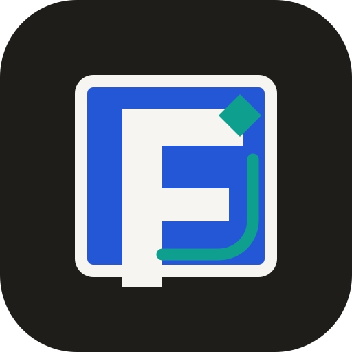
Uses the trust blue more directly. Strongest brand-system candidate.
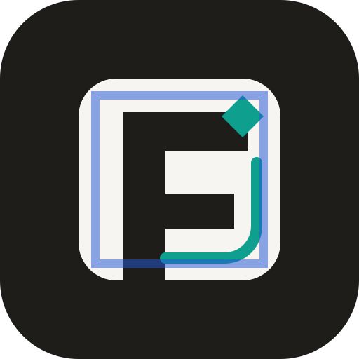
More sophisticated, more editorial. Best if we want less obvious tech.
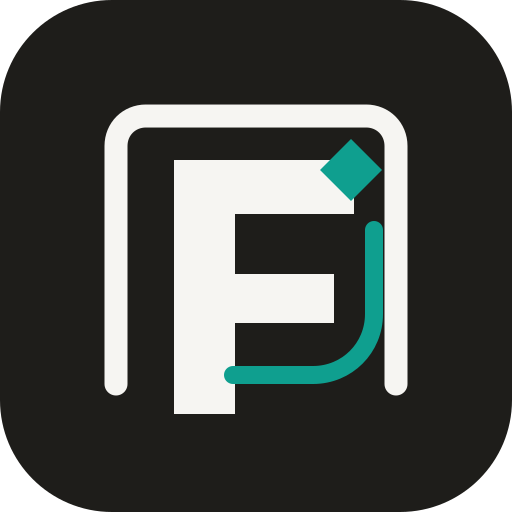
Best governance metaphor without looking like security software.
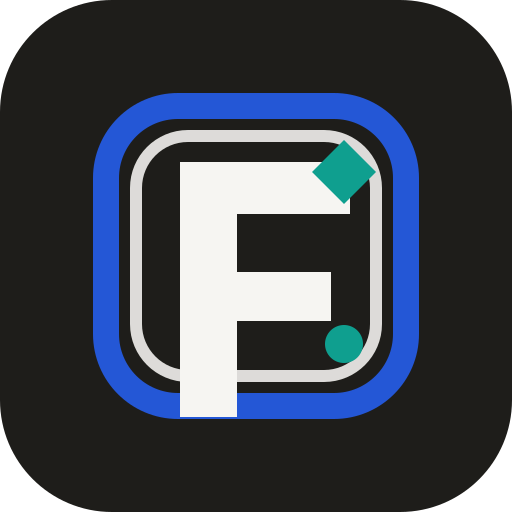
Most aligned with blue + teal. Strongest for app identity.
My honest shortlist: 10 if we want the most coherent Foundry by SignalOS identity, 08 if we want the most premium mark, 02 if orange is the direction, and 12 if light green is preferred. I would not ship the brighter green variants as the final identity.